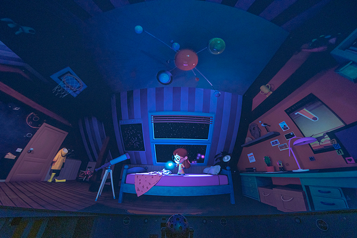

망원경으로 보는
지구 바깥의 세상
우리가 살고 있는 지구 바깥의 세상엔 어떠한 별들이 펼쳐져 있을까요?
밀양아리랑 우주천문대와 함께 별들을 찾아보아요.
-
- 예약하기
- 예약 사이트 바로가기
-
- 이용안내
- 이용안내 바로가기
-
- 1 : 1문의
- 1 : 1문의 바로가기
프로그램
별들과 가까워질 시간.
천체투영 프로그램
-

일반 프로그램
이달의 밤하늘 해설 약 20분을 듣고
간단한 영상물을 관람합니다. -

심화 프로그램
영상물 없이 약 40분에 걸쳐
밤하늘의 이야기를 들을 수 있습니다. -
힐링 프로그램
해설 없이 아로마향을 곁들인
힐링 영상물을 관람합니다. -
대체 프로그램
기상악화 시에 천체투영관에서
가상천체 관측을 진행합니다.
야간 프로그램
-

1. 야간 프로그램, 야간강의
재미있는 주제로 천문학을 쉽게 접할 수 있는 야간 강의가 있습니다.
시간 및 요금안내
우주 여행을 시작할 사전 준비.
-
천문대 관람료
관람료 자세히 보기천문대 관람료 구분 개인 단체 밀양시민 성인 4,000원 3,000원 2,000원 학생 2,000원 1,500원 1,000원
공지사항
우주천문대에서 전해드리는 소식